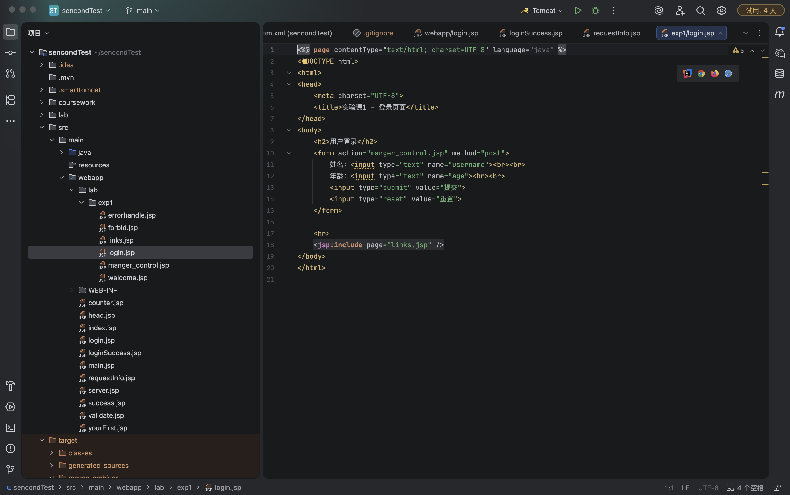
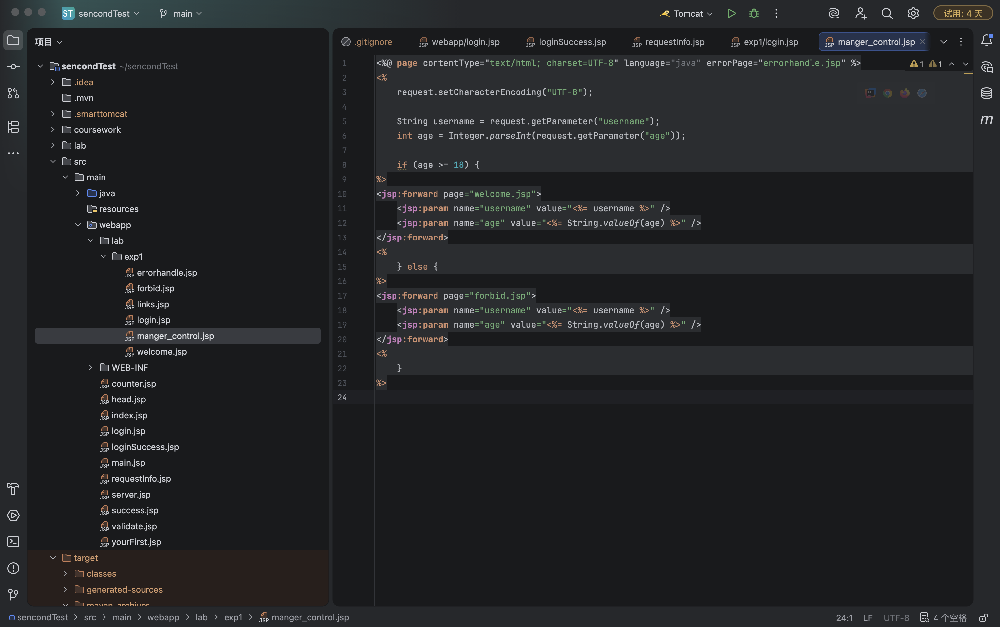
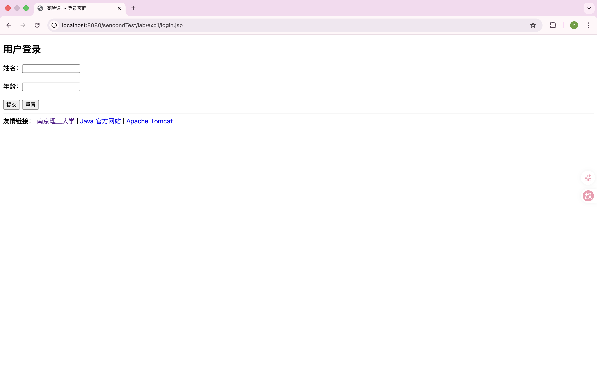
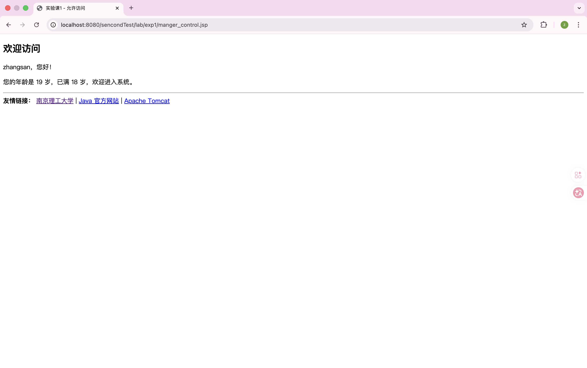
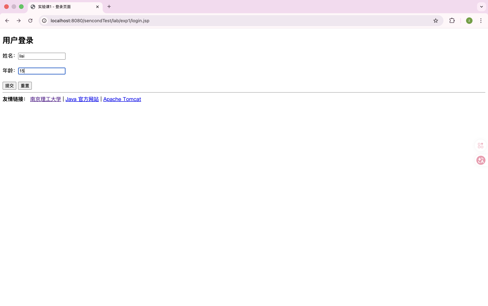
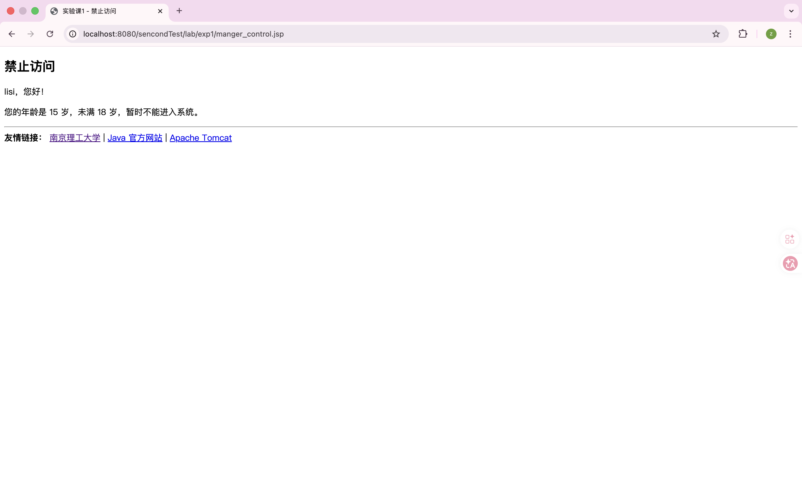

| 课程编号 | 03415011 |
| 课程名称 | Java Web开发基础 |
| 学院 | 计算机学院 |
| 专业 | 待填写 |
| 学号 | 260414101121 |
| 姓名 | 待填写 |
| 任课教师 | 童安玲 |
| 实验名称 | 实验课第一次实验：JSP 应用 |
1. 掌握 JSP 基本语法。
2. 掌握在 JSP 页面中使用 include 标记动态加载文件的方法。
3. 学会使用 forward 动作实现页面转向。
本次实验根据实验指导书要求，完成了一个基于 JSP 的年龄判断应用。用户在 login.jsp 页面中输入姓名和年龄，提交后进入 manger_control.jsp。在该页面中通过接收表单参数并判断年龄大小，若年龄大于等于 18 岁，则使用 <jsp:forward> 跳转到 welcome.jsp；若年龄小于 18 岁，则跳转到 forbid.jsp。此外，welcome.jsp 和 forbid.jsp 都配置了 errorhandle.jsp 作为错误处理页面，login.jsp、welcome.jsp 和 forbid.jsp 底部还通过 <jsp:include> 动态加载共同的友情链接内容。
本次实验主要完成了以下页面设计：
login.jsp：用于输入姓名和年龄。manger_control.jsp：用于接收表单参数并按年龄判断跳转页面。welcome.jsp：显示成年用户允许访问的信息。forbid.jsp：显示未成年用户禁止访问的信息。errorhandle.jsp：统一处理页面运行中的异常。links.jsp：封装友情链接内容，供多个页面复用。核心控制代码如下：
<%@ page contentType="text/html; charset=UTF-8" language="java" errorPage="errorhandle.jsp" %>
<%
request.setCharacterEncoding("UTF-8");
String username = request.getParameter("username");
int age = Integer.parseInt(request.getParameter("age"));
if (age >= 18) {
%>
<jsp:forward page="welcome.jsp">
<jsp:param name="username" value="<%= username %>" />
<jsp:param name="age" value="<%= String.valueOf(age) %>" />
</jsp:forward>
<%
} else {
%>
<jsp:forward page="forbid.jsp">
<jsp:param name="username" value="<%= username %>" />
<jsp:param name="age" value="<%= String.valueOf(age) %>" />
</jsp:forward>
<%
}
%>
公共友情链接页面代码如下：
<div>
<strong>友情链接：</strong>
<a href="https://www.njust.edu.cn" target="_blank">南京理工大学</a>
|
<a href="https://www.oracle.com/java/" target="_blank">Java 官方网站</a>
|
<a href="https://tomcat.apache.org" target="_blank">Apache Tomcat</a>
</div>
实验运行地址为：http://localhost:8080/sencondTest/lab/exp1/login.jsp。


运行实验后，首先访问登录页面，页面中可以正常显示姓名输入框、年龄输入框、提交按钮、重置按钮以及友情链接。当输入姓名 zhangsan、年龄 19 并提交后，系统跳转到 welcome.jsp，显示允许访问的信息；当输入姓名 lisi、年龄 15 并提交后，系统跳转到 forbid.jsp，显示禁止访问的信息。整体结果符合实验要求。




通过本次实验，我进一步掌握了 JSP 页面开发的基本流程，熟悉了表单提交、参数获取、条件判断和页面跳转等操作。在实验过程中，我重点练习了 <jsp:forward> 和 <jsp:include> 两个动作标签，理解了它们在页面转向和公共内容复用中的作用。
通过编写 errorhandle.jsp 页面，我也进一步认识到 JSP 页面异常处理的重要性。整体来看，本次实验让我对 JSP 的页面组成方式、指令配置和动作标签的使用方法有了更清晰的理解，也为后续 Java Web 开发实验打下了基础。